|
Widget
|
Description
|
|

|
Border. This widget displays a one-pixel-wide rectangular border. The border is rendered around the outside of the actual boundary of the widget so that it precisely frames any other widget with the same size. (See also the BorderWidget class.)
The widget color controls the color of the border.
- The “Line style” setting determines whether the border is rendered as solid, dotted (with either one-pixel dots or two-pixel dots), or dashed.
|
|
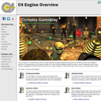
|
Browser. This widget displays an interactive web browser. It is available when the Browser plugin is installed. (See also the BrowserWidget class.)
The widget color applies a tint to the entire web browser.
- The “Internal width” setting determines the width of the internal texture map into which web pages are rendered. Together with the internal height, this defines the virtual window size for the web browser, and it is independent of the size of the browser widget itself.
- The “Internal height” setting determines the height of the internal texture map into which web pages are rendered.
- The “Enable alpha blending” setting determines whether the browser widget is rendered with alpha blending.
- The “Home page address” setting specifies the URL of the home page for the browser widget.
- The “Address widget identifier” setting specifies a text-based widget that gets updated with the browser's current address whenever it changes.
|
|
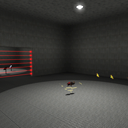
|
Camera. This widget displays a remote camera view in the world being played. It is only available for in-game panel effects. (See also the CameraWidget class.)
The widget color applies a tint to the entire camera view.
- The “Camera connector” setting identifies a connector belonging to the panel effect node that is connected to a camera node through which the camera view is rendered.
- The “Minimum detail level” setting specifies the minimum detail level for both geometry and shaders at which objects are rendered through the camera. Higher numbers correspond to lower detail levels.
- The “Detail level bias” setting specifies a bias that is added to the normal detail level for objects rendered through the camera.
|
|
|
Check Box. This widget displays a check box that can be in the checked state or unchecked state. (See also the CheckWidget class.)
The widget color controls the color of the text.
- The “Initially checked” setting determines whether the check box is initially in the checked state.
|
|
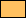
|
Color Box. This widget displays a color selection box that displays a color picker dialog when clicked. (See also the ColorWidget class.)
The widget color controls the color of the color box's border.
- The “Initial color value” setting specifies the color value to which the color box is initially set (the color rendered in the interior).
- The “Color picker title” setting specifies the title of the color picker window displayed when the user clicks inside the color box.
- The “Include alpha channel” setting specifies whether the user is able to modify the alpha channel in the color picker.
|
|
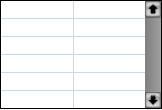
|
Configuration Table. This widget displays a configuration table that is used to show property settings to the user. (See also the ConfigurationWidget class.)
The widget color controls the color of the configuration table's border.
- The “Title column fraction” setting determines what fraction of the full width of the table is used for the setting titles. A vertical line is rendered in between the title column and value column in the table.
- The “Show script variable column” setting is used by the Script Editor to indicate that a third column be shown for variable name entry.
|
|
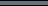
|
Divider. This widget displays a window divider bar. (See also the DividerWidget class.)
The widget color is not used.
|
|
|
Editable Text Box. This widget displays an editable text box that allows a single line or multiple lines of text entry. (See also the EditTextWidget class.)
The widget color controls the color of the text.
- The “Maximum length” setting specifies the maximum number of characters that can be entered into the text box.
- The “Allow text to overflow” setting specifies whether the width of the text can exceed the width of the text box (with scrolling).
- The “Use multiple lines” setting specifies whether the text box renders multiple lines or just a single line of text.
- The “Text is read-only” setting specifies that the user cannot change the text in the text box, but can still select and copy parts of it.
- The “Select all when changed” setting causes the text box to automatically select all when its text is changed through a method other than user input.
- The “Select all on double-click” setting causes a double-click in the text box to select all, whereas a double-click would normally select only the word that was clicked on.
- The “Render plain (text only)” setting causes the border, background, and keyboard focus glow to not be rendered.
- The “Render focus plain (no glow)” setting causes the keyboard focus glow to not be rendered (but the border and background are still shown).
- The “Border color” setting determines the color of the text box's border.
- The “Background color” setting determines the color of the text box's background.
- The “Caret color” setting determines the color of the insertion caret.
|
|
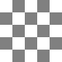
|
Frustum Viewport. This widget displays a viewport with a frustum camera. (See also the FrustumViewportWidget class.)
The widget color is not used.
|
|
|
Hyperlink. This widget displays a text button with a hyperlink. Clicking on the button opens the default web browser installed on the user's computer and navigates to the address stored in the widget. (See also the HyperlinkWidget class.)
The widget color controls the color of the text.
- The “Hyperlink URL” specifies the link sent to the user's browser when the text button is activated.
|
|
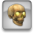
|
Icon Button. This widget displays a button with a texture image. (See also the IconButtonWidget class.)
The widget color applies to the texture image displayed in the button.
- The “Stays selected when clicked” setting causes the button to remain in the selected state when it is clicked.
- The “Initially selected” setting specifies that the button is initially in the selected state.
|
|
|
Image. This widget displays a plain texture image. (See also the ImageWidget class.)
The widget color applies a tint to the texture image.
- The “Texture map” setting specifies the texture resource that is displayed by the widget.
- The “X scale” setting applies a horizontal scale to the texture image.
- The “Y scale” setting applies a vertical scale to the texture image.
- The “X offset” setting applies a horizontal offset to the texture image.
- The “Y offset” setting applies a vertical offset to the texture image.
- The “Blend mode” setting specifies the blending mode for the texture image:
- The value “Add” causes the image to be added to the background.
- The value “Alpha add” causes the image to be multiplied by its alpha channel and then added to the background.
- The value “Alpha blend” causes the image to be multiplied by its alpha channel and then added to the background multiplied by the inverse of the image's alpha channel.
- The value “Alpha preblend” causes the image to be added to the background multiplied by the inverse of the image's alpha channel.
- The value “Replace” causes the image to replace the background with no blending.
|
|

|
Line. This widget displays a one-pixel-wide line that can be solid, dotted, or dashed. (See also the LineWidget class.)
The widget color controls the color of the line.
- The “Line style” setting determines whether the line is rendered as solid, dotted (with either one-pixel dots or two-pixel dots), or dashed.
|
|
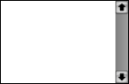
|
List. This widget displays a list box with a scroll bar. (See also the ListWidget class.)
The widget color controls the color of the list's border.
- The “Item spacing” setting specifies the vertical distance from one list item to the next. The height of the list box should be a multiple of this value to avoid extra space at the bottom of the list.
- The “Item offset X” setting specifies a horizontal offset for items displayed in the list.
- The “Item offset Y” setting specifies a vertical offset for items displayed in the list.
- The “Allow multiple selection” setting enables multiple items to be selected in the list at the same time.
- The “Render focus plain (no glow)” setting causes the keyboard focus glow to not be rendered.
- The “Text item font” setting determines what font is used to display plain text list items.
|
|
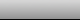
|
Menu Bar. This widget displays a menu bar that allows the user to choose commands from pull-down menus. (See also the MenuBarWidget class.)
The widget color applies a tint to the menu bar.
- The “Menu title spacing” setting specifies how much horizontal space is inserted between menu titles.
- The “Menu title offset Y” setting specifies the vertical offset for menu titles.
- The “Menu title font” setting determines what font is used to display menu titles.
|
|
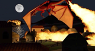
|
Movie. This widget plays a movie resource. (See also the MovieWidget class.)
The widget color applies a tint to the entire movie image.
- The “Movie name” setting specifies the resource name of the movie.
- The “Movie is initially playing” setting causes the movie to start playing when the panel is loaded.
- The “Movie is looping” setting causes the movie to loop.
- The “Movie blend mode” setting specifies the blending mode for the movie image. This setting pertains only to movies that contain an alpha channel. See the image widget for the meaning of the blending modes.
- The “Source connector key” setting identifies a connector belonging to the panel effect node that is connected to a source node through which the movie audio is played. This setting pertains only to movie widgets belonging to in-game panel effects.
|
|
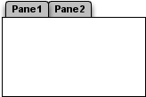
|
Multipane Box. This widget displays a multipane box. The border and selection tabs are displayed outside the actual boundary of the widget. (See also the MultipaneWidget class.)
The widget color controls the background color for the pane tabs.
- The “Pane title font” setting determines what font is used to display pane titles.
- The “Pane list” setting specifies the list of pane titles, where each title is separated from the next by a semicolon.
- The “Initial selection” setting determines which pane is initially selected. A value of −1 indicates that no pane is selected.
|
|
|
Ortho Viewport. This widget displays a viewport with an orthographic camera. (See also the OrthoViewportWidget class.)
The widget color is not used.
|
|
|
Paint. This widget displays an interactive painting canvas. The brush radius, fuzziness, opacity, and color can be set from a script using controller functions. (See also the PaintWidget class.)
The widget color applies a tint to the contents of the painting canvas.
- The “Resolution X” and “Resolution Y” settings determine the internal resolution of the painting canvas, in pixels.
- The “Background color” setting determines what color the painting canvas is initially filled with.
- The “Initial brush radius” setting specifies the initial radius of the paint brush, in pixels.
- The “Initial brush fuzziness” setting specifies the initial fuzziness of the paint brush in the range 0.0 (no fuzziness) to 1.0 (very fuzzy).
- The “Initial brush opacity” setting specifies the initial opacity of the paint brush in the range 1% (almost completely transparent) to 100% (completely opaque).
- The “Initial brush color” setting specifies the initial color of the paint brush.
|
|
|
Password. This widget displays a password entry box that obscures the text entered into it. (See also the PasswordWidget class.)
The widget color controls the color of the text.
|
|
|
Popup Menu. This widget displays a popup menu. (See also the PopupMenuWidget class.)
The widget color controls the color of the text.
- The “Render plain (text only)” setting causes the background button not to be rendered.
- The “Item spacing” setting specifies the vertical distance from one menu item to the next.
- The “Menu item list” setting specifies the list of menu items, where each item is separated from the next by a semicolon.
- The “Initial selection” setting determines which menu item is initially selected. A value of −1 indicates that no item is selected, in which case the text string is displayed, if specified.
|
|
|
Progress Bar. This widget displays a progress bar. (See also the ProgressWidget class.)
The widget color controls the color of the completed portion of the progress bar. If the widget color is black, then the default highlight color is used instead.
- The “Initial value” setting specifies the initial value of the progress bar.
- The “Maximum value” setting specifies the maximum value of the progress bar.
|
|
|
Push Button. This widget displays a button with a text string. (See also the PushButtonWidget class.)
The widget color controls the color of the text.
- The “Default button” setting indicates that the button should be rendered with the default appearance, which causes the color of the button be that specified by the
$buttonColor system variable.
|
|
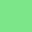
|
Quad. This widget displays a plain colored quad. (See also the QuadWidget class.)
The widget color controls the color of the quad.
|
|
|
Radio Button. This widget displays a radio button that can be in the selected or unselected state. When a radio button is selected, all other radio buttons in the same group (or in the entire window if the radio button is not in a group) are automatically unselected. (See also the RadioWidget class.)
The widget color controls the color of the text.
- The “Initially selected” setting determines whether the radio button is initially in the selected state.
|
|
|
Scroll Bar. This widget displays a scroll bar. (See also the ScrollWidget class.)
The widget color is not used.
- The “Render horizontal buttons” setting causes the up, down, and indicator buttons to be rendered with lighting for a horizontally-oriented scroll bar.
- The “Initial value” setting specifies the initial value for the scroll bar.
- The “Maximum value” setting specifies the maximum value for the scroll bar.
- The “Page up/down distance” setting specifies by how much the value changes when the user clicks in the scroll bar above or below the indicator button.
|
|
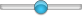
|
Slider. This widget displays a slider. (See also the SliderWidget class.)
The widget color is not used.
- The “Slider style” setting determines the style of the indicator button, and it can be circular or square.
- The “Initial value” setting specifies the initial value for the slider.
- The “Maximum value” setting specifies the maximum value for the slider.
|
|
|
Table. This widget displays a table with a fixed number of columns in a box with a scroll bar. (See also the TableWidget class.)
The widget color controls the color of the table's border.
- The “Number of columns” setting specifies the number of columns in the table.
- The “Cell size X” setting specifies the horizontal size of each cell in the table. The width of the widget should be a multiple of this value plus 16 pixels for the scroll bar.
- The “Cell size Y” setting specifies the vertical size of each cell in the table. The height of the widget should be a multiple of this value to avoid extra space at the bottom of the table.
- The “Item offset X” setting specifies a horizontal offset for items displayed in the table.
- The “Item offset Y” setting specifies a vertical offset for items displayed in the table.
- The “Highlight inset X” setting specifies the left and right inset for the highlight box rendered behind selected items in the table.
- The “Highlight inset Y” setting specifies the top and bottom inset for the highlight box rendered behind selected items in the table.
- The “Allow multiple selection” setting enables multiple items to be selected in the table at the same time.
- The “Render focus plain (no glow)” setting causes the keyboard focus glow to not be rendered.
|
|
|
Text. This widget displays a plain text string. (See also the TextWidget class.)
The widget color controls the color of the text.
- The “Text font” setting determines in what font the text is displayed.
- The “Alignment” setting determines the alignment of the text within the widget's bounding box. This can be left, center, or right.
- The “Text scale” setting specifies a scale to be applied to the text.
- The “Extra leading” setting specifies how much extra space to insert between lines of text. This value can be negative.
- The “Display as single line” setting causes the text to be rendered only on a single line and clipped to the left and right edges of the widget's bounding box. If this setting is not checked, then the text is word-wrapped and displayed as multiple lines.
The text string box contains the string that is displayed by the widget. If the text is displayed as multiple lines, then a hard line break can be inserted by entering \n in the text string. There are also several formatting tags that can be used inside the text string to control appearance:
-
[#rgb] Set the text color to the value given by the three hexadecimal digits r, g, and b (for instance, [#F00] for bright red).
-
[LEFT] Set left text alignment.
-
[RGHT] Set right text alignment.
-
[CENT] Set center text alignment.
|
|
|
Text Button. This widget displays a clickable text string. (See also the TextButtonWidget class.)
The widget color controls the color of the text.
- The “Pushed color” setting determines the color in which the text is rendered while the mouse button is pressed inside the text.
|
|
|
World Viewport. This widget renders a complete world inside a frustum viewport, and the it provides camera orbit functionality. (See also the WorldViewportWidget class.)
The widget color is not used.
|